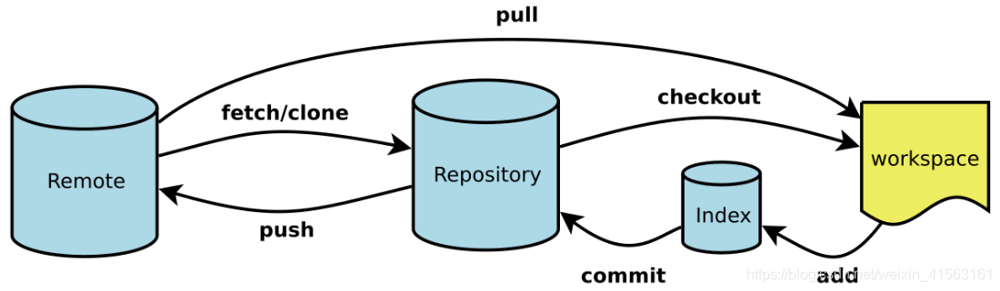
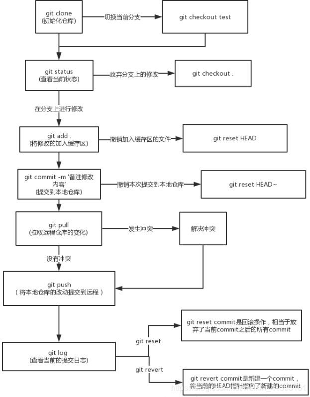

这篇文章简要介绍Git，常见的Git使用方法以及高频的Git面试问题：
GIT
- Workspace：开发者工作区
- Index / Stage：暂存区/缓存区
- Repository：仓库区（或本地仓库）
- Remote：远程仓库


Q&A
你在一个分支上开发，领导希望你解决main分支上的一个bug，请问应该怎么操作GIT？（你没没有push main分支的权限）
-
保持当前工作不丢：先把手上开发的分支保存起来。
- 如果代码未完成，可先
git stash，避免切换分支丢改动。
- 如果代码未完成，可先
-
切到 main 分支并更新：
1 2git checkout main git pull origin main（保持本地 main 是最新的）
-
从 main 新建一个修复分支（因为你没有直接 push main 的权限）：
1git checkout -b fix/bug-xxx在这个分支上修复 bug。
-
提交改动并推送到远程：
1 2 3git add . git commit -m "fix: 修复 xxx bug" git push origin fix/bug-xxx -
发起 Pull Request (PR)：
- 通知领导/同事，让他们把
fix/bug-xxx合并进main。
- 通知领导/同事，让他们把
-
回到原来的开发分支，继续开发：
1 2git checkout my-feature git stash pop # 恢复之前保存的工作
第一级：基础概念与日常操作 (判断你是否真的在用)
这个级别的目标是确认你不是只停留在 git clone, git pull, git push。
1. “请简单介绍一下 Git 是什么？”
- 考察点： 你对 Git 的核心定位是否理解。
- 回答要点： Git 是一个分布式版本控制系统。关键点在于“分布式”，这意味着每个开发者本地都有一份完整的代码历史仓库，可以在不联网的情况下进行提交、查看历史、创建分支等操作。这与 SVN 等集中式系统（必须连接中央服务器才能工作）是核心区别。
2. “git pull 和 git fetch 有什么区别？”
- 考察点： 对远程仓库交互的理解是否清晰。这是个非常高频的问题。
- 回答要点：
git fetch：从远程仓库下载最新的对象（commits, files, etc.），但不会自动合并或修改你当前的工作。它只是更新你的本地远程分支（如origin/main）。你可以先fetch下来看看远程有什么更新，再决定是否合并。git pull：相当于git fetch之后，立刻跟上一个git merge。它会抓取最新内容并立即尝试合并到你当前所在的分支。
3.“你平时一天的工作中，Git 的基本流程是怎样的？”
- 考察点： 你的实际工作习惯，是否规范。
- 回答要点：
- 开始新任务前，先切换到
develop或main分支，git pull拉取最新代码，确保基础代码是最新的。 git checkout -b feature/xxx创建并切换到一个新的功能分支。- 在功能分支上进行开发，使用
git add .和git commit -m "..."进行阶段性提交。 - 开发完成后，
git push origin feature/xxx将本地分支推送到远程。 - 在 GitHub/GitLab 等平台上，创建一个 Pull Request (或 Merge Request)，请求将你的功能分支合并到主开发分支（如
develop）。
第二级：分支与团队协作 (判断你是否能和团队高效合作)
这个级别的问题是面试的重点，直接关系到你在团队中的协作效率。
5. “git merge 和 git rebase 的区别是什么？你更倾向于用哪个？”
-
考察点： Git 核心技能，对代码历史整洁度的理解。这是必考题。
-
回答要点：
git merge：会创建一个新的“合并提交”(merge commit)，将两个分支的历史交汇在一起。它的历史记录是真实的，但如果合并频繁，会导致提交历史的分叉非常多，看起来很乱。git rebase(变基)：会把你当前分支的提交“搬到”目标分支的最新提交之后，形成一条线性的、干净的提交历史。- 倾向与选择：
- 在合并自己本地的、还未推送到远程公共分支的功能分支时，倾向于使用
rebase来保持提交历史的整洁。例如，在合并到develop之前，先git pull --rebase origin develop。 - 在合并公共分支（如将
develop合并到main）时，通常使用merge，以保留清晰的合并节点，记录下这是一个正式的版本合并。
- 在合并自己本地的、还未推送到远程公共分支的功能分支时，倾向于使用
-
关键原则：****永远不要对一个已经推送到远程并被多人使用的公共分支进行
rebase，因为这会改写历史，给其他协作者带来灾难。
6. “当 git pull 或 merge 时遇到冲突 (Conflict)，你会怎么解决？”
- 考察点： 解决协作中最常见问题的能力。
- 回答要点：
- 首先，保持冷静，
git status会清晰地告诉你哪些文件发生了冲突。 - 打开冲突的文件，你会看到类似
<<<<<<< HEAD,=======,>>>>>>>的标记。 - 理解冲突的原因：
HEAD部分是你当前分支的修改，下面的部分是你要合并过来的分支的修改。 - 与相关的同事沟通（如果需要），或者根据需求，手动编辑文件，删除这些特殊标记，并将代码修改成最终想要的样子。
- 修改完毕后，执行
git add <冲突文件名>将文件标记为已解决。 - 最后，执行
git commit(如果是merge冲突) 或git rebase --continue(如果是rebase冲突) 来完成合并。
第三级：进阶操作与问题解决 (判断你的经验深度和处理异常的能力)
如果你能答好这个级别的问题，会非常加分。
7. “如果你提交了一个错误的 commit，甚至已经 push 到了远程，该如何修正？”
-
考察点： 代码修正和“后悔药”的能力。
- 情况一：还未 push
- 方法1： 修改 commit 信息：
git commit --amend - 方法2：撤销上一次 commit 但保留代码修改：
git reset --soft HEAD^
- 方法1： 修改 commit 信息：
- 情况一：还未 push
-
情况二：已经 push 到远程
- 最佳实践： 使用
git revert <commit-id>。这会创建一个新的 commit，内容是指定 commit 的反向操作。它不会改写历史，对公共分支是安全的。 - 危险操作 (仅限个人分支)： 如果确定这个分支只有你一个人在用，可以使用
git reset --hard <commit-id>回滚到某个版本，然后git push --force强制推送到远程。强调你知道这是危险的，并解释为什么。
- 最佳实践： 使用
8. “git reset、git revert 和 git checkout 都可以用来回退代码，它们有什么区别？”
- 考察点： 对不同“撤销”工具的精确理解。
- 回答要点：
git reset：移动HEAD指针，可以改变分支的指向。--hard会丢弃工作区的修改，--soft会保留。它会改写历史。git revert：用一个新的 commit 来撤销一个旧的 commit。它不改写历史，是安全的回退方式。git checkout：主要用于切换分支，也可以用来恢复工作区中某个文件的内容到指定的版本，一般不用于分支级别的回退。
9. “git stash 是做什么用的？”
- 考察点： 是否知道如何处理“写了一半的代码，突然要切分支改 Bug”的场景。
- 回答要点： 当你正在一个分支上开发，但代码还没到可以 commit 的程度，突然需要切换到另一个分支处理紧急任务时，可以使用
git stash。它会把你当前工作区的修改（staged 和 unstaged）“暂存”起来，让你的工作区变得干净。处理完任务回来后，再用git stash pop或git stash apply把之前暂存的代码恢复出来。
10. “git cherry-pick 是做什么的？你在什么场景下会使用它？”
- 考察点： 是否知道如何“挑选”并复用单个 commit，处理特定、零散的需求。
- 回答要点：
- 作用：
git cherry-pick的作用是将一个或多个已经存在的 commit “复制”一份，并应用到你当前所在的分支上。它会创建一个内容相同但哈希值（commit ID）全新的 commit。 - 使用场景：
- 作用：
- Bug 修复： 假设你在
develop分支上修复了一个紧急 Bug，这个修复也需要立即应用到已经发布的main分支上。但develop分支上还有很多其他未完成的功能，不能直接合并。这时，你就可以在main分支上cherry-pick那个修复 Bug 的 commit。 - 功能提取： 你在一个功能分支
feature-A上开发了几个 commit，后来发现其中一个 commit（比如一个通用的工具函数）对另一个功能分支feature-B也很有用。你就可以用cherry-pick把这个特定的 commit “摘”到feature-B分支上，而无需合并整个feature-A。
11. “什么是 HEAD？什么是“分离头指针”（Detached HEAD）状态？”
- 考察点： 对 Git 底层指针概念的理解，这是区分新手和熟练使用者的一个标志。
- 回答要点：
HEAD是什么：HEAD是一个特殊的指针，它总是指向你当前所在的位置。在大多数情况下，HEAD指向一个分支的末端（比如main或develop）。当你切换分支时（git checkout develop），HEAD就会从指向main变为指向develop。- 分离头指针 (Detached HEAD)： 当
HEAD不指向一个分支名，而是直接指向一个具体的 commit 哈希值时，你就进入了“分离头指针”状态。 - 如何进入： 通常是通过
git checkout <commit-id>或git checkout <tag-name>进入的。 - 危险性： 在这个状态下，你仍然可以提交代码，但这些新的 commit 不属于任何分支。一旦你切换到其他分支（比如
git checkout main），这些在“分离”状态下产生的 commit 就可能丢失，因为没有任何分支指针指向它们，它们会被 Git 的垃圾回收机制清理掉。 - 如何解决： 如果你在分离头指针状态下做了有用的提交，应该立即用
git checkout -b <new-branch-name>创建一个新分支来保存这些提交。
12. “.gitignore 文件是做什么用的？它的匹配规则是怎样的？如果一个文件已经被 Git 跟踪了，再把它加入 .gitignore 会怎么样？”
- 考察点： 对项目配置和实际工程经验的了解。
- 回答要点：
-
作用：
.gitignore文件用来告诉 Git 哪些文件或目录不需要被纳入版本控制。这通常包括编译产物（如dist目录）、日志文件、临时的依赖包（如node_modules）以及包含敏感信息的配置文件等。 -
匹配规则： 可以简单提几条，比如：
#开头的行是注释。/开头表示只匹配项目根目录下的文件。*是通配符，匹配任意字符。!开头表示例外，即不忽略某个文件。
-
文件已被跟踪的情况： 如果一个文件已经被
git add和git commit纳入了版本历史，那么之后再把它加入.gitignore是无效的，Git 会继续跟踪这个文件的变化。 -
解决方法： 必须先从 Git 的跟踪列表中移除它，然后再提交。命令是：
1 2 3 4# 从 Git 仓库中删除，但保留本地文件 git rm --cached <file_name> # 然后提交这个删除操作 git commit -m "Stop tracking <file_name>"这样之后，
.gitignore的规则才会对这个文件生效。
-
13. “当你在准备一个 Pull Request 时，发现自己分支上有很多零碎的、意义不大的 commit（比如 “fix typo”, “update”），你会怎么处理？”
考察点： 对维护一个干净、可读的提交历史的意识和能力。
- 回答要点：
- 为了让主分支的历史保持清晰，也为了方便 Code Review 的人理解，我会将这些零碎的 commit 合并成一个或几个有意义的 commit。
- 我会使用交互式变基（
git rebase -i） 来实现这个目标。 - 具体步骤：
- 比如我想合并最近的 5 个 commit，我会运行
git rebase -i HEAD~5。 - 在打开的编辑器中，我会把第一个 commit 前面的
pick保留，把后面几个 commit 的pick改为squash(或s)，意思是“将这个 commit 合并到前一个 commit 中”。 - 保存并退出后，Git 会让我重新编辑一个新的 commit message，来概括这几个被合并的 commit 的所有工作。
- 完成后，我的分支上就只有一个干净、完整的 commit 了。如果这个分支已经 push 过，我需要用
git push --force-with-lease来强制更新远程分支。
14. “git add 这个命令是做什么的？它和 git commit 有什么关系？”
- 考察点： 对 Git “暂存区”（Staging Area）这个核心概念的理解。
- 回答要点：
git add的作用是把你工作区里指定文件的当前修改添加到“暂存区”。暂存区就像一个购物篮或者草稿箱，你可以把想提交的内容先放进去。- 你可以多次使用
git add把不同文件的修改放进暂存区。 git commit命令则是把你暂存区里所有内容打包成一个版本（一个 commit）并永久记录到你的本地仓库历史中。- 总结关系就是：
git add是准备工作，用来挑选你这次想提交的内容；git commit是确认操作，把准备好的所有内容一次性提交。
15. “当你输入 git status 命令时，你通常会关注哪些信息？”
- 考察点： 你是否会通过
git status来清晰地了解当前工作状态，这是最基本、最重要的习惯。 - 回答要点：
- 当前所在分支： 首先我会确认我目前在哪个分支上，避免在错误的分支上进行操作。
- 是否有未暂存的修改 (Changes not staged for commit)： 查看哪些文件被修改了，但还没有被
git add。 - 是否有已暂存的修改 (Changes to be committed)： 查看哪些文件已经被
git add，准备好被提交了。 - 是否有未被跟踪的文件 (Untracked files)： 查看项目中是否出现了 Git 还不认识的新文件。
- 与远程分支的关系： 查看本地分支是领先（ahead）还是落后（behind）于远程分支，这提示我是否需要
push或pull。
16. “什么是分支 (Branch)？为什么我们在开发中要使用分支？”
- 考察点： 对 Git 最核心特性之一“分支”的理解，以及它带来的好处。
- 回答要点：
- 什么是分支： 分支就像是代码历史的一个独立副本或一条独立的时间线。你可以在一个分支上自由地进行修改和提交，而不会影响到其他分支（比如主分支
main）。 - 为什么使用分支：
- 什么是分支： 分支就像是代码历史的一个独立副本或一条独立的时间线。你可以在一个分支上自由地进行修改和提交，而不会影响到其他分支（比如主分支
- 隔离开发： 最大的好处是隔离。开发新功能、修复 Bug 都在各自独立的分支上进行，不会污染主分支的稳定性。
- 并行工作： 团队成员可以同时在各自的分支上开发不同的功能，互不干扰。
- 安全实验： 你可以创建一个分支来尝试一些新的、不确定的想法。如果成功了，就合并它；如果失败了，直接删除这个分支就行，对主项目没有任何影响。
- 清晰的工作流： 通过分支可以实现像 Git Flow 这样的规范化流程，让版本管理更加清晰。
17. “git clone 和直接下载 ZIP 压缩包有什么区别？”
- 考察点： 是否理解 Git 仓库的本质，即它不仅仅是代码文件。
- 回答要点：
- 下载 ZIP 包： 你只得到了项目在某个时间点的所有代码文件。它是一个静态的快照，不包含任何 Git 的版本历史记录。你无法使用
git log,git checkout等命令。 git clone： 你得到的是一个完整的 Git 仓库。这不仅包括了项目的所有代码文件，还包括了项目从创建以来的全部版本历史（所有的 commit 记录）。这是一个“活”的仓库，你可以立即在上面进行版本控制操作，并与远程仓库进行同步。
- 下载 ZIP 包： 你只得到了项目在某个时间点的所有代码文件。它是一个静态的快照，不包含任何 Git 的版本历史记录。你无法使用
18. “Git 和 GitHub 有什么区别？”
- 考察点： 这是最根本的概念辨析题，用来判断你是否混淆了工具和平台。
- 回答要点：
- Git 是一个工具。它是一个开源的、分布式的版本控制系统，安装在你的电脑上，用来管理代码的版本历史。它是核心，是引擎。
- GitHub 是一个平台或服务。它是一个基于网络的托管服务，使用 Git 作为其核心的版本控制工具。GitHub 提供了一个地方（远程仓库）来存储你的代码，并提供了很多协作功能，比如 Pull Requests、Issues、代码审查、项目管理等。
- 比喻： Git 就像是 Word 程序，而 GitHub 就像是 Google Docs。Word（Git）是你本地用来写作和保存版本的工具，而 Google Docs（GitHub）是一个在线平台，让你可以把文档（代码）存到云端，并和别人一起协作编辑。
19. “什么是提交信息（Commit Message）？你觉得写好它为什么很重要？”
- 考察点： 你的代码规范意识和团队沟通能力。
- 回答要点：
- 是什么： 提交信息是在每次
git commit时，对这次提交所做修改的简短描述。 - 为什么重要：
- 是什么： 提交信息是在每次
- 方便回顾： 当你想查找某个特定的修改时，清晰的提交信息能让你通过
git log快速定位，而不需要去阅读每一行代码的变动。 - 便于团队协作： 你的队友可以通过提交信息快速了解你做了什么，这对于 Code Review（代码审查）和理解项目进展至关重要。
- 快速定位问题： 如果某个版本出现了 Bug，规范的提交信息可以帮助团队快速排查是哪一次提交引入了问题。
（加分项）好的提交信息规范： 可以简单提一下，比如遵循“第一行是标题，简明扼概括；空一行后是主体，详细描述修改内容和原因”的格式。
20. “git remote -v 这个命令是做什么用的？”
- 考察点： 对远程仓库管理的基本命令是否熟悉。
- 回答要点：
- 这个命令用来查看你本地仓库当前配置的所有远程仓库的详细信息。
-v是verbose（详细）的缩写。- 输出结果会列出远程仓库的简称（通常是
origin）以及对应的 URL 地址，并且会区分fetch（拉取）和push（推送）的地址。这在确认你将要把代码推送到哪里时非常有用。
21. “如何创建一个新的本地分支，并把它推送到远程仓库？”
- 考察点： 这是一个完整的、非常基础的工作流，检验你是否能将命令串联起来使用。
- 回答要点：
- 第一步：创建并切换到新分支。 我会使用
git checkout -b <new-branch-name>。这个命令相当于git branch <new-branch-name>（创建分支）和git checkout <new-branch-name>（切换分支）两个命令的组合。 - 第二步：在新分支上做一些提交。 至少要有一个 commit，否则推送一个空的分支没有意义。
- 第三步：推送到远程仓库。 当我第一次推送这个新分支时，我会使用
git push -u origin <new-branch-name>。 - （加分项）解释
-u参数：-u是--set-upstream的缩写。它的作用是在推送的同时，在本地建立起当前分支与远程分支的追踪（tracking）关系。这样设置一次之后，未来在这个分支上再推送时，我就可以直接使用简单的git push命令了。
- 第一步：创建并切换到新分支。 我会使用
21. “git tag 是做什么用的？你一般在什么时候会使用它？”
- 考察点： 是否了解版本发布和里程碑标记。
- 回答要点：
- 作用：
git tag用来给某一个特定的 commit 打上一个有意义的、不可移动的标签。它就像是代码历史上的一个“里程碑”或“书签”。 - 主要用途： 最常见的用途是标记发布版本。比如，当项目
1.0版本开发完成并准备上线时，我们会在对应的最后一个 commit 上打一个v1.0.0的标签。 - 好处：
- 作用：
- 易于识别：
v1.0.0远比一长串的 commit 哈希值（如f8e2a9c）更容易记忆和识别。 - 方便检出： 团队成员可以轻松地使用
git checkout v1.0.0来获取这个特定版本的代码，非常适合代码发布和问题回溯。
（加分项）如何推送标签： 默认情况下，git push 不会把标签推送到远程仓库。你需要显式地推送，可以使用 git push origin <tag-name> 推送单个标签，或者用 git push --tags 一次性推送所有本地的新标签。
22. “git log 命令是做什么的？你有没有用过它的一些参数？”
- 考察点： 查看和理解提交历史的能力。
- 回答要-点：
- 作用：
git log是用来查看当前分支的提交历史记录的命令。它会按时间倒序列出所有的 commit，包括作者、日期和提交信息。 - 常用参数：
--oneline：这是我最常用的参数之一，它把每个 commit 的信息压缩到一行显示，看起来非常清爽。--graph：会用 ASCII 字符画出分支的合并历史图，能清晰地看到各个分支的来龙去脉。--all：显示所有分支的历史，而不仅仅是当前分支。- 组合使用： 我经常会把它们组合起来用，比如
git log --oneline --graph --all，这样可以快速地对整个项目的历史有一个全局的了解。
- 作用：
23. “什么是 origin？”
- 考察点： 对远程仓库别名的理解。
- 回答要点：
origin是 Git 为你clone的那个远程仓库所设置的默认别名。- 它不是一个特殊的命令或关键字，它只是一个名字，一个指向远程仓库 URL 的指针。当你运行
git remote -v时，你就能看到origin对应的就是你克隆时的那个长长的 URL。 - 使用
origin这个别名，可以让我们在push或pull的时候更方便，而不用每次都输入完整的仓库地址。当然，我们也可以添加其他名字的远程仓库，比如upstream或backup。
24. “HEAD、HEAD^ 和 HEAD~2 分别代表什么？”
- 考察点： 对相对引用（relative reference）的理解，即如何在 commit 历史中移动。
- 回答要点：
HEAD：指向当前所在分支的最新一次提交。可以把它理解为“当前位置”。HEAD^（或者HEAD~1）：代表HEAD的上一个提交，也就是父提交。HEAD~2：代表HEAD的上上个提交，也就是往前数两个的提交。数字可以改变，HEAD~5就是往前数五个。
25. Git 的三个主要区域（或工作区）是什么？请简单描述一下它们之间的关系。
- 考察点： 这是对 Git 最核心、最底层的概念模型的理解。能说清楚这个，说明你真的懂 Git 是如何工作的。
- 回答要点：
- 工作目录 (Working Directory)： 就是你在电脑上能看到的、包含项目文件的那个文件夹。这是你进行代码编辑、添加、删除文件的主要地方。
- 暂存区 (Staging Area / Index)： 这是一个位于
.git目录中的特殊文件。当你使用git add命令时，你实际上是把工作目录中的修改快照添加到了暂存区。它像一个“待提交清单”，让你在提交前可以精确控制哪些修改要被包含进去。 - 本地仓库 (Local Repository / .git directory)： 当你运行
git commit时，Git 会把暂存区里的所有内容生成一个永久的快照（一个 commit），并保存在本地仓库中。本地仓库包含了项目的所有版本历史。
三者关系流转： 你在工作目录修改代码 -> 使用 git add 将修改放入暂存区 -> 使用 git commit 将暂存区的内容提交到本地仓库。
26. git config 命令是做什么的？你知道它有哪几个不同的配置级别吗？
- 考察点： 对 Git 环境配置的了解，这是开始使用 Git 时的第一步。
- 回答要点：
- 作用：
git config命令用来查看和设置 Git 的配置变量。最常见的配置就是你的用户名和邮箱，比如git config --global user.name "Your Name"。 - 三个主要级别：
- 作用：
--local(本地)： 配置只对当前仓库有效。配置信息保存在当前仓库的.git/config文件中。这是默认级别，不加参数就是它。--global(全局)： 配置对当前电脑用户的所有仓库都有效。配置信息保存在用户主目录下的.gitconfig文件中。这是最常用的配置级别。--system(系统)： 配置对这台电脑上的所有用户和所有仓库都有效。配置信息保存在 Git 的安装目录里。这个用得比较少。
优先级： 如果同一个配置项在不同级别都有设置，local 的优先级最高，其次是 global，最后是 system。
27. 什么是 Commit Hash（提交哈希值）？
- 考察点： 对 Git 如何唯一标识每一次提交的理解。
- 回答要点：
- Commit Hash（或称 Commit ID）是你每次运行
git commit时，Git 自动生成的一个唯一的、长度为 40 位的字符串（由数字和字母组成）。 - 它是通过对提交内容（包括代码、作者、提交信息、时间戳等）进行 SHA-1 哈希算法计算得出的。
- 作用： 它的核心作用是作为每一次提交的唯一身份证号。因为它是根据内容生成的，所以任何对提交内容的微小改动都会导致生成一个全新的哈希值，这保证了 Git 历史的完整性和不可篡改性。我们在
revert、checkout、cherry-pick等操作中，就是用这个哈希值来精确定位某一次提交的。
- Commit Hash（或称 Commit ID）是你每次运行
28. git diff 是做什么的？你能举几个常用场景吗？
- 考察点： 对比代码差异的能力，这是提交前检查代码的必备技能。
- 回答要点：
- 作用：
git diff是一个用来比较差异的命令。 - 常用场景：
- 作用：
git diff：不加任何参数，它会显示工作目录中已修改但未暂存（还没有git add）的文件与暂存区之间的差异。这是查看“我刚刚改了什么”最直接的方式。git diff --staged(或--cached)：显示暂存区与最新一次提交 (HEAD) 之间的差异。这可以让你在git commit之前，最后一次检查将要提交的内容是否正确。git diff <分支A> <分支B>：比较两个分支之间的差异，这在准备合并分支或发起 Pull Request 之前非常有用。
29. 什么是“快进合并”（Fast-forward merge）？
- 考察点： 对
git merge底层机制的理解，这是报告中“merge”模块的一个重要知识点。 - 回答要点：
- “快进合并”是一种特殊的、最简单的合并场景。
- 发生条件： 当你要合并的分支（比如
feature）的历史记录，正好是当前分支（比如main）的直接下游时，也就是说，从feature分支创建以来，main分支没有任何新的提交。 - 过程： Git 不会创建一个新的“合并提交”，它只是简单地把
main分支的指针直接移动到feature分支的最新位置。这个过程就像是把main分支“快进”了一下，所以叫 Fast-forward。 - 结果： 提交历史是一条干净的直线，没有分叉。
30. git switch 和 git checkout 在切换分支时有什么区别？
考察点： 对新命令的了解，表明你关注 Git 的发展。git switch 是在 Git 2.23 版本后引入的。
- 回答要点：
- 在早期版本中，
git checkout命令功能过于庞杂，它既能切换分支，又能恢复文件，容易引起混淆。 - 为了让职责更清晰，Git 引入了两个新命令：
git switch：专门用于切换分支。比如git switch main。git restore：专门用于恢复文件。比如git restore a.txt。
- 区别与建议：
git switch的意图更明确，只做切换分支这一件事，可以有效防止误操作。在较新的 Git 版本中，推荐使用git switch来切换分支。
- 在早期版本中，
31. git commit --amend 是做什么的？
- 考察点： 修改最新一次提交的能力。
- 回答要点：
git commit --amend用来修正最新的一次提交。- 主要用途：
- 修改提交信息： 如果你刚刚的 commit message 写错了，可以立刻运行这个命令来修改。
- 补充文件： 如果你提交后发现漏掉了一个文件，可以先
git add <漏掉的文件>，然后运行git commit --amend，Git 会把这个文件补充进上一次的 commit 中，而不会产生新的 commit。
注意： 它本质上是用一个新的 commit 替换了旧的 commit，所以如果你的旧 commit 已经推送到了远程，修改后需要强制推送。
32. git blame 是做什么用的？
考察点： 代码考古和问题追溯的能力。
- 回答要点：
git blame是一个非常有用的“甩锅”和“考古”工具。- 作用： 它可以逐行显示一个文件中的每一行代码，是在哪一次提交中、由哪位作者、在什么时间修改的。
- 使用场景： 当你看到一段有问题的或者看不懂的代码时，可以使用
git blame <文件名>来快速找到当初写下这行代码的人和相关的 commit，从而了解当时的背景和意图。
- 为什么说
git reflog是“救命稻草”？
考察点： 终极“后悔药”的使用，体现你的经验深度。
- 回答要点：
git reflog（Reference Log，引用日志）记录了HEAD指针在本地仓库中的所有移动历史。- 为什么是救命稻草： 它记录了你几乎所有的操作，包括切换分支、提交、重置（reset）、变基（rebase）等，即使这些操作在
git log中已经看不到了。 - 使用场景： 当你错误地使用了
git reset --hard删除了一些重要的 commit，或者在 rebase 中搞砸了历史，导致一些提交“丢失”时，你可以在git reflog中找到这些操作之前的状态，然后使用git reset --hard <reflog中的哈希值>来恢复到那个安全的时间点。
工作流与最佳实践
34. 你能简单介绍一下 Git Flow 工作流吗？
- 考察点： 对业界成熟的协作模型的了解。
- 回答要点：
- Git Flow 是一个非常经典、规范的 Git 分支管理模型，特别适合有明确版本发布周期的项目。
- 它定义了几个关键分支：
main(或master) 分支： 存放最稳定的、可随时发布到生产环境的代码。只接受来自release或hotfix分支的合并。develop分支： 主开发分支，包含了所有准备在下一个版本发布的功能。它是功能分支的汇集点。feature/\*分支： 功能分支，从develop分支切出，用于开发新功能。开发完成后合并回develop。release/\*分支： 发布分支，当develop分支的功能足够发布一个新版本时，从develop切出一个release分支，专门用于版本测试、修复 Bug。完成后，同时合并到main和develop分支。hotfix/\*分支： 热修复分支，当线上main分支出现紧急 Bug 时，从main分支切出，修复后同时合并回main和develop。